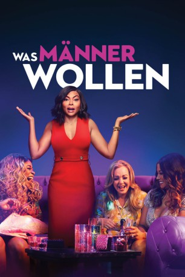

gesehen am 12.05.2019
gesehen am 12.05.2019Alternativ: What Men Want (Englischer Titel) gesehen am 12.05.2019
 
 IMDB-Wertung: 4.7 / 10
IMDB-Wertung: 4.7 / 10  Metascore:
Metascore: 
Ali Davis (Taraji P. Henson) ist eine erfolgreiche Sportagentin, die oft von ihren männlichen Kollegen außen vor gelassen wird. Als ihre Beförderung aus bleibt, fragt sie sich, was sie braucht, um in einer Männer-Welt Erfolg zu haben - bis sie die Fähigkeit erlangt Gedanken von Männern zu lesen!
Jahr: 2019
Dauer: 117 Minuten
FSK: 12
Land: USA Studio: Paramount PicturesTonspuren: DD5.1 - ,
Untertitel: Deutsch, Englisch,
Auflösung: 1080p (1920x800) Größe: 7598 MB
Genre: Komödie, Fantasy, Liebe
Regisseur: Adam Shankman
Drehbuch: Tina Gordon, Peter Huyck, Alex Gregory, Jas Waters, Tina Gordon
Soundtrack: Brian Tyler
Darsteller:
 Taraji P. Henson als Ali Davis
Taraji P. Henson als Ali Davis Josh Brener als Brandon Wallace
Josh Brener als Brandon Wallace Kellan Lutz als Captain Fucktastic
Kellan Lutz als Captain Fucktastic Max Greenfield als Kevin Myrtle
Max Greenfield als Kevin Myrtle Richard Roundtree als Skip Davis
Richard Roundtree als Skip Davis Aldis Hodge als Will
Aldis Hodge als Will Tracy Morgan als Joe 'Dolla' Barry
Tracy Morgan als Joe 'Dolla' Barry Wendi McLendon-Covey als Olivia
Wendi McLendon-Covey als Olivia Tamala Jones als Mari
Tamala Jones als Mari Marc Inniss als Male Dancer
Marc Inniss als Male Dancer Charles Green als Dr. Wilson
Charles Green als Dr. Wilson Deja Dee als Hairdresser
Deja Dee als Hairdresser Mark Cuban als Mark Cuban
Mark Cuban als Mark Cuban Shaquille O'Neal als Shaquille O'Neal
Shaquille O'Neal als Shaquille O'Neal Charmin Lee als Loretta
Charmin Lee als Loretta Jennifer 'Ms Fer' Russell als Wedding Guest / Restaurant Customer / Party Guest (uncredited)
Jennifer 'Ms Fer' Russell als Wedding Guest / Restaurant Customer / Party Guest (uncredited) Timothy Carr als Coach / Trainer (uncredited)
Timothy Carr als Coach / Trainer (uncredited) David Dunston als Street Guy (uncredited)
David Dunston als Street Guy (uncredited)Datei: X:\2019(N-Z)\Was Männer wollen (2019, FSK12, 1920x800).mkv seit 10.05.2019
Festplatte: HD 2018(G-Z)-2019(A-Z)
 Es gibt insgesamt 62 Filme in der Gruppe '2019(N-Z)'
Es gibt insgesamt 62 Filme in der Gruppe '2019(N-Z)'